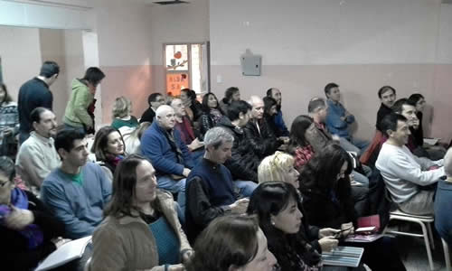

Real Chubut - Agencia de Noticias


Educación pone en marcha la certificación docente en pedagogía y enseñanza para la escuela secundaria

Esta propuesta formativa busca que quienes se desempeñan como docentes en ese nivel cuenten con formación pedagógica suficiente para fortalecer sus prácticas a fin de construir un sistema más eficaz y de mayor calidad.
El Ministerio de Educación del Chubut anunció el inicio del cursado de la Certificación Docente en Pedagogía y Enseñanza para la Escuela Secundaria, una propuesta que tiene como objetivo ofrecer trayectos para la complementación pedagógica a profesores que trabajen en la actualidad en el nivel medio, sin título docente.
La Certificación Docente en Pedagogía y Enseñanza está en marcha para los 962 alumnos regulares de la Cohorte 2015, después de un profundo trabajo realizado durante el primer semestre por el equipo técnico de la Dirección General de Nivel Superior.
Durante este tiempo, el área liderada por la doctora Cecilia Perea, realizó un arduo y sostenido trabajo para que la Certificación cuente con una Resolución, que es la Nº 239/16; un convenio con el Instituto Nacional de Formación Docente y con contenidos para cada módulo debidamente definidos, además de coordinar con cada uno de los Institutos Superiores de Formación Docente su modalidad.
“Los institutos son sede pedagógica y administrativa; cada uno cuenta con un coordinador con el que tienen que contactarse los estudiantes de la Certificación, ya que cada instituto tiene su cronograma propio. Los institutos están haciendo un gran trabajo, que reconocemos y valoramos pues se apropiaron de la Certificación y la tomaron como una carrera más dentro de su oferta educativa”, dijo Perea.
A QUIÉN ESTÁ DIRIGIDA
Se trata de una propuesta formativa semipresencial, que se lleva adelante en los Institutos Superiores de Formación Docente y que fue ideada para profesionales universitarios, técnicos superiores, profesores de Educación Primaria y/o personal con título secundario, que actualmente se desempeñan como docentes en el secundario y que cuentan, como mínimo, con tres años de antigüedad.
La inscripción para las materias del primer cuatrimestre está abierta para aquellos cursantes que cumplen con los siguientes requisitos: haber cursado el módulo Marco Político Pedagógico durante 2015 o tenerlo aprobado por equivalencia y figurar como alumno regular en el listado de calificaciones.
Además, debe contar con el legajo completo y actualizado en el Instituto en el que se encuentra inscripto, en donde se certifique que tiene una antigüedad de al menos tres años en el Nivel Secundario y estar frente a alumnos.
Durante la reformulación del proyecto, la Dirección General de Nivel Superior hizo hincapié en la necesidad de construir recorridos formativos personalizados, con diferentes escenarios de aprendizaje, adecuados a los intereses y necesidades de los cursantes.
Así, como novedad, se instrumenta un sistema de créditos que permite la autonomía del cursante, de modo tal de poner en valor su trayectoria y el valor de formaciones previas. Además, se establecieron seminarios presenciales y la cursada de los módulos será presencial y en algunos casos virtual.
“Esta oferta de formación tiene como fin enriquecer el desarrollo profesional de los trabajadores del nivel y construir un sistema educativo más eficaz y de mayor calidad. La Certificación Docente surge con un criterio ambicioso, pero enmarcado en la idea de que es el Estado el responsable y garante de asegurar una formación de calidad y con equidad para todos los docentes que trabajan en el sistema”, dijo Cecilia Perea, directora general de Nivel Superior.
La Ley de Educación Nacional (LEN) postula la jerarquización y la revalorización de la formación docente como factor central y estratégico del mejoramiento de la calidad de la educación. En tal sentido, esta propuesta de formación docente responde a la necesidad de alcanzar los mayores niveles de equidad, calidad, eficiencia y efectividad del sistema educativo.
El diseño curricular de la Certificación Docente se organiza en tres trayectos formativos, diferenciados según el título de base del destinatario, y se construye sobre tres pilares: una fuerte formación pedagógico-didáctica; la construcción de recorridos formativos personalizados y la articulación con el ejercicio laboral.
Los ISFD en toda la provincia en los que se localiza la oferta son en la Región I, el ISFD N° 813 de Lago Puelo; en la Región II, el ISFD N° 803 de Puerto Madryn; en la Región III, el ISFD N° 804 de Esquel y en la Región IV, el ISFD N° 808, en Trelew.
En la Región V, de Sarmiento, el ISFD N° 802 y en Comodoro, también el ISFD Nº 802.
Toda la información puede leerse en la página institucional www.chubut.edu.ar
PUBLICIDAD